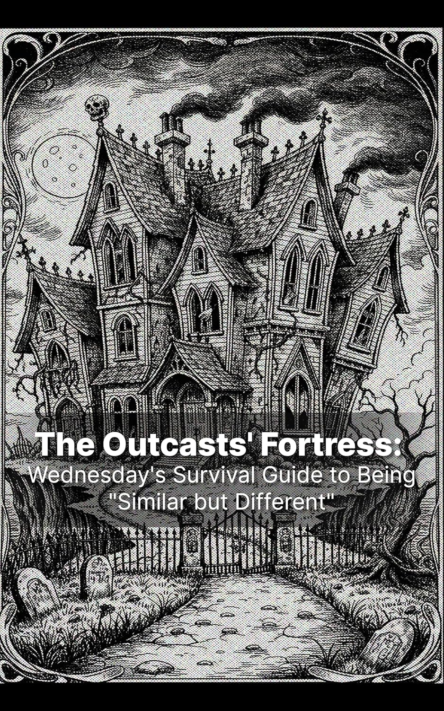

考試、證照、職場技能—為什麼我們要花錢買課程？
我花了很多年，學習怎麼把事情做好。但真正對我造成影響的，是某個人的獨特生命經驗，給我的「啟蒙時刻」，讓我用不同的方式，看待自己的生命軌跡。
ShiFu
大師課在做的，就是把這樣的啟蒙時刻，
設計成一段美好成長體驗：讓大師一路走來的獨特人生經驗，
成為重新看待自己的起點。
我一直在做的，是挖掘值得被說出來的故事，然後轉化成能感動受眾的作品。
在新聞業，我每天篩選大量國際新聞，包裝成受眾容易理解的內容，打開他們的視野。
在行銷業，我深度挖掘企業與創辦人特色，用他們的獨特故事，打動更多潛在客戶。
在遊戲業，我學會和工程師、美術一起合作，把故事轉化成玩家能親身走入、互動的世界。
我想延續這樣的創作信念，和 ShiFu 團隊一起，把每位大師的故事，做成能讓學員們仔細品味的好作品。
品牌選這兩個字，本身就暗示了一件事：ShiFu 賣的不是一次知識交易，而是一段關係和成長歷程。「老師」、「講師」解決你的特定需求，「師父」改變你看事情的方式，讓你一生受用。
學員買課程，買的是「學習」，還是「成長」？當我們聚焦在「人的成長」，那麼師父能教給學員的，就不只是技能。技能會過時。但一個人看待問題的方式，會跟著他一輩子。
同樣的問題，不同的切入方式
以下是我做過的幾件事。
把紐約時報一篇關於韓國咖啡店產業的深度報導，轉化為一款互動式決策遊戲。玩家扮演首爾獨立咖啡店老闆，在四個季度中面對經營決策。
Play the Game →
從熱門 Netflix 影集《星期三》中，找到還沒有粉絲深入討論過的故事角度，寫成一本有明確問題意識和結構的英文電子書，上架亞馬遜。
View on Amazon →把 ShiFu 的課程當成「體驗型產品」分析：TA 想買什麼體驗？買完記住什麼？不滿意的人期待的又是什麼？透過平台數據研究與社群評論分析回答這些問題，並檢視課程設計如何更完善地打造 TA 期待的課程體驗。完整的研究，我很樂意在面試中聊。
View Research →每位大師，都是一個全新的世界——要走進去，找到最值得被展開的故事，再和團隊一起，把它做成讓人想一直看下去的作品。
我待了三個產業持續做這件事，下一個故事，我準備好了。